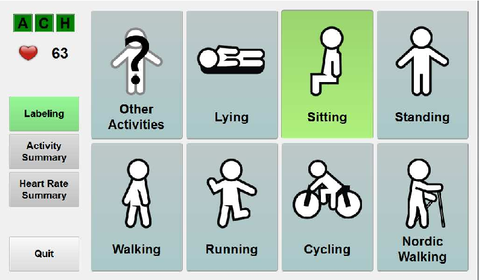

In this project I spent most of time cleaning
and extracting customer data from the server
i used SQL and Python for data cleaning,
Using my Knowledge of statistics and machine learning algorithm to build model.
.
This project involved creating interactive dashboards
and reports based on customer data, leading to valuable
insights and improved customer engagement strategies. Additionally,
it focused on analyzing global CO2 emissions, generating informative reports
and enabling effective strategies for environmental sustainability.
In this analysis I identified the key variables
that contribute to low returns in the production of
comedy-action-thriller movies. By analyzing the IMDB dataset,
I conducted an Exploratory Data Analysis to gain insights,
propose hypotheses, and ultimately make informed decisions regarding
genre movie selection for SussexBudgetProductions based on return on investment.

This report provides an analysis of the PAMAP2 Physical Activity Monitoring dataset,
aiming to develop a predictive model for identifying the physical activities performed
by subjects based on measured data. The report is divided into three main sections.
The first section covers data preparation, handling missing values, and exploring
the dataset through techniques such as Exploratory Data Analysis and visualization.
The second section focuses on hypothesis formulation and testing using statistical theory.
Finally, the third section delves into model construction and validation,
applying machine learning algorithms to the data and evaluating the model's performance
through experiments and statistical tests.
This project focuses on addressing the pressing issue of wealth inequality
through the development of data-driven models utilizing time series analysis.
By analyzing relevant datasets and employing advanced statistical techniques,
the project aims to uncover insights into the dynamics of wealth distribution over time.
The resulting models will provide valuable information for policymakers and researchers to understand the patterns, trends, and underlying factors contributing to wealth inequality, paving the way for effective strategies to mitigate this socioeconomic challenge.